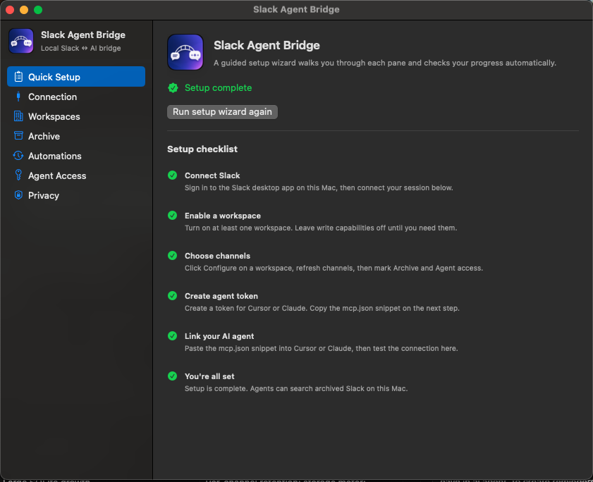
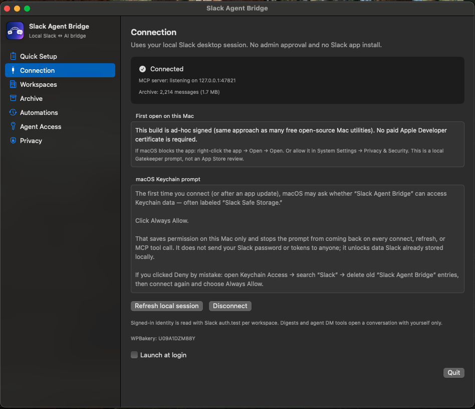
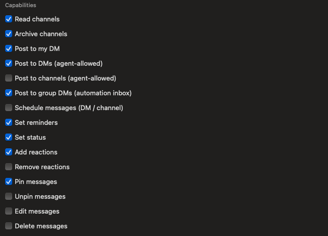
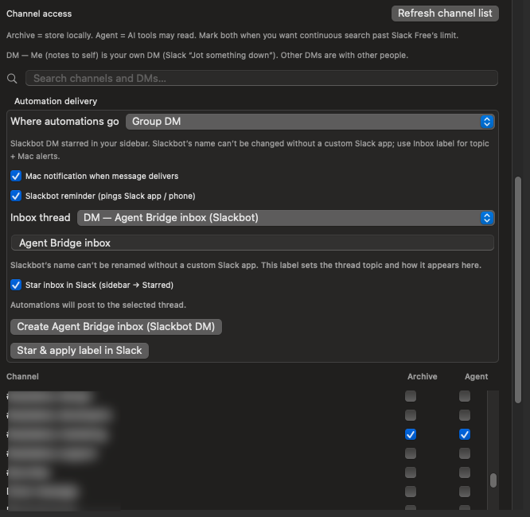
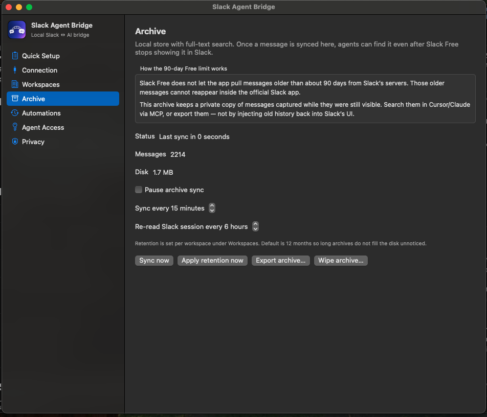
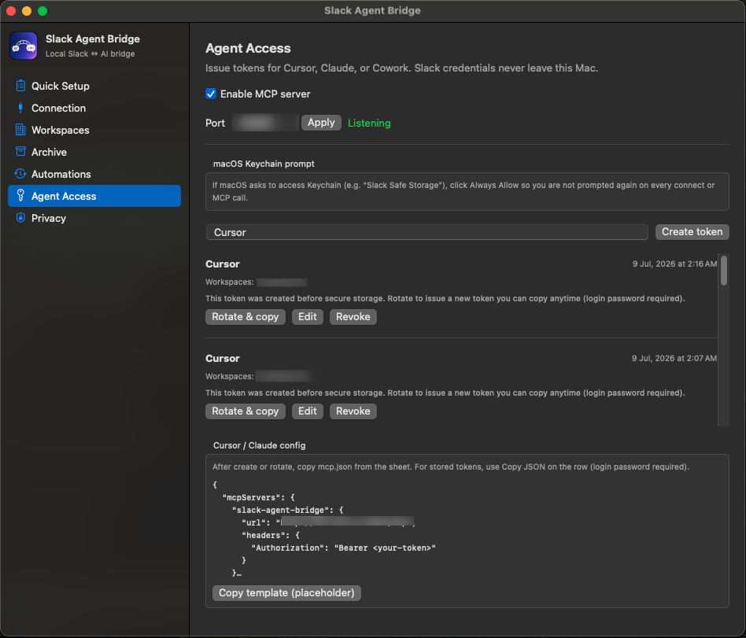
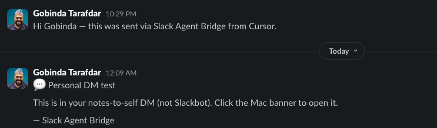
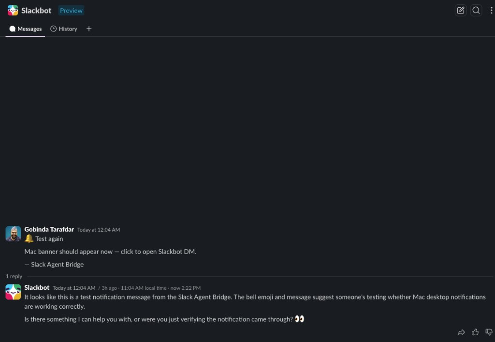

01
Connect locally
Install the app and connect your Slack desktop session. Credentials stay in the macOS Keychain on this device. Click Always Allow when macOS asks for Keychain access so MCP calls do not stall.
macOS menu-bar app · fully local · MCP for AI agents
Connect Cursor, Claude, or Cowork to the Slack desktop session already on your Mac. Search archived messages past Slack Free limits, run digests, set reminders, post to your DM, and automate without asking a workspace admin to install anything.
Slack bots and Marketplace apps can summarize channels, but they need admin approval, OAuth installs, and ongoing trust decisions. Most teams cannot casually wire an AI agent into company Slack. You still want automations, reminders, channel summaries, and searchable history inside the tools you already use.
Slack Agent Bridge sits on your Mac, reuses your existing Slack desktop login, and exposes a local MCP server so agents can read what you allow, write only what you enable, and keep a private archive that Slack Free will not serve after about 90 days. No IT ticket. No bot user in your workspace directory. Just you, your Mac, and the agent you trust.
Three steps, then your agent can call Slack tools over MCP.
01
Install the app and connect your Slack desktop session. Credentials stay in the macOS Keychain on this device. Click Always Allow when macOS asks for Keychain access so MCP calls do not stall.
02
Enable workspaces explicitly. Pick which channels to archive and which channels agents may read. Turn on write capabilities only when you need them: DM, reminders, reactions, scheduled messages, and more.
03
Create an agent token, paste the mcp.json snippet into Cursor or Claude, and call tools over
http://127.0.0.1:47821/mcp. The server never leaves your Mac.
Built for people who want Slack inside their AI workflow, not another Slack app in the admin console.
Reuses the local Slack desktop session, same practical approach as Auto AFK Slack. No OAuth app install for the workspace owner.
SQLite + full-text search on your Mac. Keep searching messages after Slack Free stops serving history older than about 90 days.
Streamable HTTP MCP on loopback only. Revocable bearer tokens with per-workspace capability flags.
Default deny. Separate Archive vs Agent channel lists. Toggle read, post, schedule, pin, edit, delete, status, and reminders per workspace.
Daily digests, keyword watches, and task drafts from archived traffic. Deliver to self-DM, Slackbot inbox, group DM, or Mac only.
Search, summarize channels, list mentions, send DM to self, create reminders, schedule messages, reactions, pins, and run local automations.
Guided checklist walks Connection, Workspaces, Archive, Agent Access, and MCP link test so you know when setup is complete.
Export or wipe the archive. Revoke tokens. Optional headless CLI is off by default. Audit log for MCP tool calls.
One app instance per Mac. Re-imports Slack session on a timer, after wake-from-sleep, and on auth errors.
Default deny. Turn on only what your agent needs. Both the agent token and workspace must allow each flag.
| Capability | Enables |
|---|---|
| Read channels | List channels, history, search, summarize, list mentions |
| Archive channels | Sync messages into local SQLite archive |
| Post to my DM | send_dm_to_self, automation to notes-to-self |
| Post to DMs (agent-allowed) | send_dm to IMs on the allow-list |
| Post to channels (agent-allowed) | send_channel to allowed channels |
| Post to group DMs (automation inbox) | Slackbot inbox, create_automation_group_dm |
| Schedule messages | schedule_message, list and delete scheduled |
| Set reminders | create_reminder to yourself |
| Set status | set_status with emoji and expiry |
| Add reactions | add_reaction |
| Remove reactions | remove_reaction |
| Pin messages | pin_message |
| Unpin messages | unpin_message |
| Edit messages | update_message |
| Delete messages | delete_message |
A guided tour of the settings you will actually use.
Step-by-step wizard checks connection, workspace enablement, channel picks, token creation, and agent link verification.

See MCP status, archive size, and session health. Refresh the local Slack session or disconnect from Keychain anytime.

Enable workspaces one by one. Capabilities are explicit toggles so agents cannot surprise-post until you allow it.

Archive stores locally. Agent marks what MCP may read. Configure automation delivery to self-DM, Slackbot inbox, or group DM.

Pause sync, set interval, apply retention, export, or wipe. Honest about Slack Free: old messages stay searchable here, not in Slack itself.

Create and rotate tokens. Copy the Cursor or Claude mcp.json template. MCP listens on localhost when enabled.

Real messages from Cursor tests: personal DM and Slackbot automation inbox.
Agents post to your personal DM with Mac notifications when delivery lands. Good for quick agent handoffs and test pings.

Automation delivery can land in a starred Slackbot DM with reminders and Mac banners so you notice agent output without hunting threads.

Every tool is workspace-scoped and capability-gated. Agents only see agent-allowed channels.
| Tool | Purpose |
|---|---|
list_workspaces | Workspaces enabled for this token |
list_agent_channels | Channels on the agent allow-list |
search_messages | Archive FTS + optional live Slack search |
get_channel_history | History for an allowed channel |
get_thread | Thread messages in an allowed channel |
list_mentions | Recent @mentions in allowed channels |
summarize_day | Local digest across allowed channels |
summarize_channel | Channel summary with optional user filter |
get_user | User profile (cached or live) |
create_reminder | Slack reminder to yourself |
send_dm_to_self | Post to your own DM |
send_dm | Post to an allowed DM channel |
send_channel | Post to an allowed channel |
schedule_message | Schedule a DM or channel message |
list_scheduled_messages | List scheduled messages |
delete_scheduled_message | Cancel a scheduled message |
update_message / delete_message | Edit or delete your messages |
add_reaction / remove_reaction | Emoji reactions |
pin_message / unpin_message | Pin management |
set_status | Set your Slack status |
draft_task_list | Extract tasks from recent archive |
create_automation_group_dm | Create Slackbot automation inbox |
list_automations / run_automation | Local digest and keyword rules |
{
"mcpServers": {
"slack-agent-bridge": {
"url": "http://127.0.0.1:47821/mcp",
"headers": {
"Authorization": "Bearer <your-token>"
}
}
}
}
Local by design. Your Slack session never leaves this Mac except to talk to slack.com over HTTPS.
The MCP server binds to 127.0.0.1. Other apps on your Mac still need a valid bearer token and matching capabilities.
Slack session credentials use macOS Keychain with this-device-only access. Agent tokens are SHA-256 hashed at rest.
Workspaces, channels, and write capabilities are off until you enable them. list_channels returns only agent-allowed channels.
No analytics, no third-party endpoints. Optional verbose logging via SLACKAGENT_DEBUG=1 only when you opt in.
Application Support directory mode 0700. Archive database 0600. Headless CLI send is off by default.
MCP tool calls and token lifecycle events append to a local audit log. Export or wipe archive data anytime.
Full threat model and checklist: docs/SECURITY.md in the repository.
The unofficial xoxc session path is the same family as other local Slack utilities; tokens can rotate, and the app re-imports on a schedule and on auth errors.
| macOS | 13.0 Ventura or later |
| Chip | Apple Silicon or Intel (universal binary) |
| Slack | Desktop app installed and signed in |
| Download | ≈ 3.4 MB · .dmg from Releases |
| Price | Free and open source (MIT) |
Notes on distribution: This app is ad-hoc signed and not notarized (no paid Apple Developer account), which is why the one-time Gatekeeper step is needed. To ship without that prompt, sign with a Developer ID certificate and notarize.
No. The app reads the Slack desktop session already on your Mac. It does not install a Slack app into the workspace or ask an admin to approve OAuth scopes.
No. Slack Free still will not show messages older than about 90 days in the Slack app. This product keeps a local searchable copy for agents, digests, and export. It does not inject history back into Slack.
A bot runs in the cloud with workspace-wide permissions and admin setup. Slack Agent Bridge runs on your Mac, scopes access to channels you mark, and exposes tools to your local AI agent over MCP. Better for personal productivity and agent workflows than rolling out another bot.
Each person runs their own copy on their own Mac with their own Slack login and their own archive. There is no shared cloud backend.
Use Refresh local session in Connection settings. The app also re-imports on a timer and retries on API auth errors.
This page fetches the latest .dmg from GitHub Releases automatically. When you publish a new release asset, the download buttons update without editing the page.
No. Slack Agent Bridge is an independent, unofficial project by Gobinda Tarafdar. Slack is a trademark of Slack Technologies, LLC.
Gobinda Tarafdar builds macOS Slack utilities that skip admin approval and stay on your Mac.
This app: MCP for Cursor and Claude, local archive past Slack Free limits, automations, reminders, and capability-gated writes.

WordPress product marketer · stubborn problem-solver · lifelong Harry Potter devotee
By day I am the Product Marketing Specialist at WPBakery, the page builder that quietly powers a sizeable corner of the WordPress universe. Before that, I helped a single plugin cross 400,000+ active users through positioning, user research, and a relentless focus on what actually moves the needle.
When the day-job owl flies home, I tinker on my own little workshop of spells. Slack Agent Bridge is one of them: a bridge between the Slack you already have and the AI agents you already use.
Slack Agent Bridge is free and open source. A GitHub star helps others find it. A small donation keeps the workshop lit.